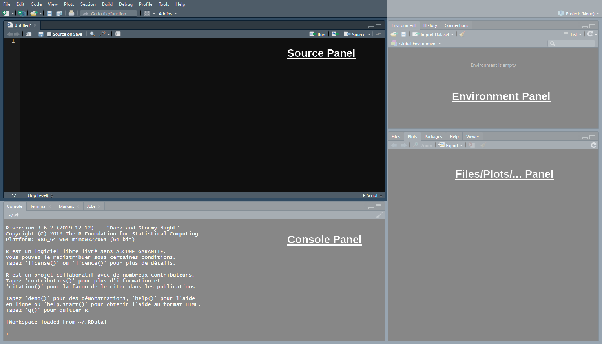

[1] 2Introduction to R, RStudio and Quarto
Overview
- Getting Started
- About R
- The R Studio IDE
- Import and eyeball data
- Anatomy of a
data.frame- Data structure
- Classes
- Vectors
- Subsetting
- Wrap Up
- Summary and key takeaways
- Markdown and universal writing
- Office Model vs. Engineering Model
- Excel failures
- Markdown
- Writing reports in Quarto
- What is Quarto?
- YAML header
- Code chunks
- Text formatting
- Run and render your code
- Inline code
- Tables
- Preset themes
- Report parameters
Getting Started
About R
R is a programming language and free software environment for statistical computing and graphics.
The R language is widely (and increasingly) used in academic and non-academic research in fields like:
- Economics
- Statistics
- Biostatistics
The R Studio IDE

The Console panel
- This is where you communicate with R
- You can write instructions after the >, press enter, and R will execute
- Try with 1+1:
The Source panel
This is where you write and save your code (File > New File > R Script)
- Separate different commands with a line break
- The # symbol allows you to comment your code
- Everything after the # will be ignored by R until the next line break

The Source panel
- To send the command from the source panel to the console panel:
- Click on/Highlight the line(s) you want to execute
- Press ctrl + enter
If you do not highlight anything the line of code where your cursor stands will be executed
Check the console to see the output of your code
The Environment panel
Data analysis requires manipulating datasets, vectors, functions, etc.
- These elements are stored in the environment panel.
For instance, we can assign a value to an object using
<-:
- Now that the object
xis stored in your environment, you can use it
- You can also modify that object at any point:

The Files/Plots/… panel
In this panel, we’ll mainly be interested in the following 4 tabs:
Files: Shows your working directory
Plots: Where R returns plots
Packages: A library of tools that we can load if needed
Help: Where to look for documentation on R functions

The Files/Plots/… panel
Enter
?getwd()in the console to see what a help file looks like:- It describes what the command does
- It explains the different parameters of the command
- It gives examples of how to use the command

Practice
03:00
- Open a new R script (
Ctrl + Shift + N) and write a code to create these objects:
| Object name: | a | b | c |
| Assigned value: | 2 | 4 | 5 |
- Run this code and create a new object named result that takes the value \(\frac{b\times c}{a} + (b-a)^c\)
| Operation: | Addition | Subtraction | Multiplication | Division | Exponentiation | Parentheses |
| Symbol in R: | + | - | * | / | ^ | () |
- Print
resultin your console and save your script somewhere on your computer (Ctrl+S)
Solution
- Open a new R script (
Ctrl + Shift + N) and write a code to create these objects:
- Run this code and create a new object named result that takes the value \(\frac{b\times c}{a} + (b-a)^c\)
- Print
resultin your console and save your script somewhere on your computer (Ctrl+S)
Import and Eyeball Data
We now know how to use R as a calculator, but our goal is to analyze data!
- Take for instance the statistics from the last season of Ligue 1 available at fbref.com
Import and Eyeball Data
- You can download the dataset for the 2021/22 season by clicking here or from the course webpage.
- Note that the file extension is .csv (for Comma Separated Values).
- Let’s take a look at the first 5 lines of the raw
.csvfile:
Wk,Day,Date,Time,Home,xG,Score,xG,Away,Attendance,Venue,Referee,Match Report,Notes
1,Fri,2021-08-06,21:00,Monaco,2.0,1–1,0.3,Nantes,7500,Stade Louis II.,Antony Gautier,Match Report,
1,Sat,2021-08-07,17:00,Lyon,1.4,1–1,0.8,Brest,29018,Groupama Stadium,Mikael Lesage,Match Report,
1,Sat,2021-08-07,21:00,Troyes,0.8,1–2,1.2,Paris S-G,15248,Stade de l'Aube,Amaury Delerue,Match Report,
1,Sun,2021-08-08,13:00,Rennes,0.6,1–1,2.0,Lens,22567,Roazhon Park,Bastien Dechepy,Match Report,The .csv format is very common and follows a specific structure:
- Each line corresponds to a row (the first row typically contains column names).
- For each row, values of each column are separated by commas.
But how do we get it into our RStudio environment?
Import and Eyeball Data
To import stuff in R we use read functions
- They take the file directory as an input
- And give the file content as an output
The read function dedicated to .csv files is
read.csv(later we will mostly useread_csv)Remember we use the arrow (
<-) to create objects in R
Important
Make sure you have the right path to your data file. Also, make sure you use correct backlashes “/”. Do NOT use “\”.
- Let’s inspect this new object
- The first thing we can do is to use head() to print the top rows
Wk Day Date Time Home xG Score xG.1 Away Attendance
1 1 Fri 2021-08-06 21:00 Monaco 2.0 1-1 0.3 Nantes 7500
2 1 Sat 2021-08-07 17:00 Lyon 1.4 1-1 0.8 Brest 29018
3 1 Sat 2021-08-07 21:00 Troyes 0.8 1-2 1.2 Paris S-G 15248
Venue Referee Match.Report Notes
1 Stade Louis II. Antony Gautier Match Report NA
2 Groupama Stadium Mikael Lesage Match Report NA
3 Stade de l'Aube Amaury Delerue Match Report NAtail()would print the bottom rowsWe can also run
View(data)(a new tab will pop-up in your Source panel)
Seems like it worked!

Or kind of worked…
These kind of weird characters pop up when there is an encoding issue
- Thankfully,
read.csv()has many options that can be set as inputs, including encoding! - Usually the UTF-8 encoding is the solution to French characters
When you will be facing similar issues, check out the arguments of read.csv() by typing ?read.csv

Overview
- Getting Started
- About R
- The R Studio IDE
- Import and eyeball data
- Anatomy of a
data.frame- Data structure
- Classes
- Vectors
- Subsetting
Anatomy of a data.frame
Data Structure
- Now that we imported the data properly, we can check out its
str()ucture in more details
Data Structure
- Don’t be scared of the output!
'data.frame': 380 obs. of 14 variables:
$ Wk : int 1 1 1 1 1 1 1 1 1 1 ...
$ Day : chr "Fri" "Sat" "Sat" "Sun" ...
$ Date : chr "2021-08-06" "2021-08-07" "2021-08-07" "2021-08-08" ...
$ Time : chr "21:00" "17:00" "21:00" "13:00" ...
$ Home : chr "Monaco" "Lyon" "Troyes" "Rennes" ...
$ xG : num 2 1.4 0.8 0.6 0.7 0.4 0.8 2.1 0.7 0.5 ...
$ Score : chr "1-1" "1-1" "1-2" "1-1" ...
$ xG.1 : num 0.3 0.8 1.2 2 3.3 0.9 0.2 1.3 1.4 2 ...
$ Away : chr "Nantes" "Brest" "Paris S-G" "Lens" ...
$ Attendance : int 7500 29018 15248 22567 18748 23250 18030 20461 15551 13500 ...
$ Venue : chr "Stade Louis II." "Groupama Stadium" "Stade de l'Aube" "Roazhon Park" ...
$ Referee : chr "Antony Gautier" "Mikael Lesage" "Amaury Delerue" "Bastien Dechepy" ...
$ Match.Report: chr "Match Report" "Match Report" "Match Report" "Match Report" ...
$ Notes : logi NA NA NA NA NA NA ...Data Structure
str()says thatdatais adata.frame, and gives its numbers of observations (rows) and variables (columns)
Data Structure
- It also gives the variables names
Data Structure
- The first values of each variable
## 'data.frame': 380 obs. of 14 variables:
## $ Wk : 1 1 1 1 1 1 1 1 1 1 ...
## $ Day : "Fri" "Sat" "Sat" "Sun" ...
## $ Date : "2021-08-06" "2021-08-07" "2021-08-07" "2021-08-08" ...
## $ Time : "21:00" "17:00" "21:00" "13:00" ...
## $ Home : "Monaco" "Lyon" "Troyes" "Rennes" ...
## $ xG : 2 1.4 0.8 0.6 0.7 0.4 0.8 2.1 0.7 0.5 ...
## $ Score : "1–1" "1–1" "1–2" "1–1" ...
## $ xG.1 : 0.3 0.8 1.2 2 3.3 0.9 0.2 1.3 1.4 2 ...
## $ Away : "Nantes" "Brest" "Paris S-G" "Lens" ...
## $ Attendance : 7500 29018 15248 22567 18748 23250 18030 20461 15551 13500 ...
## $ Venue : "Stade Louis II." "Groupama Stadium" "Stade de l'Aube" "Roazhon Park" ...
## $ Referee : "Antony Gautier" "Mikael Lesage" "Amaury Delerue" "Bastien Dechepy" ...
## $ Match.Report: "Match Report" "Match Report" "Match Report" "Match Report" ...
## $ Notes : NA NA NA NA NA NA ...Data Structure
- As well as the class of each variable
## 'data.frame': 380 obs. of 14 variables:
## $ Wk : int 1 1 1 1 1 1 1 1 1 1 ...
## $ Day : chr "Fri" "Sat" "Sat" "Sun" ...
## $ Date : chr "2021-08-06" "2021-08-07" "2021-08-07" "2021-08-08" ...
## $ Time : chr "21:00" "17:00" "21:00" "13:00" ...
## $ Home : chr "Monaco" "Lyon" "Troyes" "Rennes" ...
## $ xG : num 2 1.4 0.8 0.6 0.7 0.4 0.8 2.1 0.7 0.5 ...
## $ Score : chr "1–1" "1–1" "1–2" "1–1" ...
## $ xG.1 : num 0.3 0.8 1.2 2 3.3 0.9 0.2 1.3 1.4 2 ...
## $ Away : chr "Nantes" "Brest" "Paris S-G" "Lens" ...
## $ Attendance : int 7500 29018 15248 22567 18748 23250 18030 20461 15551 13500 ...
## $ Venue : chr "Stade Louis II." "Groupama Stadium" "Stade de l'Aube" "Roazhon Park" ...
## $ Referee : chr "Antony Gautier" "Mikael Lesage" "Amaury Delerue" "Bastien Dechepy" ...
## $ Match.Report: chr "Match Report" "Match Report" "Match Report" "Match Report" ...
## $ Notes : logi NA NA NA NA NA NA ...Data Structure
- But what does the class correspond to?
## 'data.frame': 380 obs. of 14 variables:
## $ Wk : int ?
## $ Day : chr ?
## $ Date : chr ?
## $ Time : chr ?
## $ Home : chr ?
## $ xG : num ?
## $ Score : chr ?
## $ xG.1 : num ?
## $ Away : chr ?
## $ Attendance : int ?
## $ Venue : chr ?
## $ Referee : chr ?
## $ Match.Report: chr ?
## $ Notes : logi ?Classes
Numeric
These are simply numbers:
- Numeric variable classes include:
- int for round numbers
- dbl for 2-decimal numbers
Character
They must be surrounded by " or ':
- We also call these values:
- Character strings
- Or just strings
Classes
Classes
| numeric | character | logical | |
|---|---|---|---|
| as.numeric() | No effect | Converts strings of numbers into numeric values Returns NA if characters in the string |
Returns 1 if TRUE Returns 0 if FALSE |
| as.character() | Converts numeric values into strings of numbers |
No effect | Returns "TRUE" if TRUE Returns "FALSE" if FALSE |
| as.logical() | Returns TRUE if != 0 Returns FALSE if 0 |
Returns TRUE if "T" or"TRUE" Returns FALSE if "F" or "FALSE" Returns NA otherwise |
No effect |
NA stands for ‘Not Available’, it corresponds to a missing value
Classes
One last mystery…
'data.frame': 380 obs. of 14 variables:
$ Wk : int 1 1 1 1 1 1 1 1 1 1 ...
$ Day : chr "Fri" "Sat" "Sat" "Sun" ...
$ Date : chr "2021-08-06" "2021-08-07" "2021-08-07" "2021-08-08" ...
$ Time : chr "21:00" "17:00" "21:00" "13:00" ...
$ Home : chr "Monaco" "Lyon" "Troyes" "Rennes" ...
$ xG : num 2 1.4 0.8 0.6 0.7 0.4 0.8 2.1 0.7 0.5 ...
$ Score : chr "1-1" "1-1" "1-2" "1-1" ...
$ xG.1 : num 0.3 0.8 1.2 2 3.3 0.9 0.2 1.3 1.4 2 ...
$ Away : chr "Nantes" "Brest" "Paris S-G" "Lens" ...
$ Attendance : int 7500 29018 15248 22567 18748 23250 18030 20461 15551 13500 ...
$ Venue : chr "Stade Louis II." "Groupama Stadium" "Stade de l'Aube" "Roazhon Park" ...
$ Referee : chr "Antony Gautier" "Mikael Lesage" "Amaury Delerue" "Bastien Dechepy" ...
$ Match.Report: chr "Match Report" "Match Report" "Match Report" "Match Report" ...
$ Notes : logi NA NA NA NA NA NA ...Classes
Are these dollar signs here for a reason?
Vectors
It’s actually just a reference to the fact that $ allows to extract a variable from a dataset
[1] "Monaco" "Lyon" "Troyes" "Rennes"
[5] "Bordeaux" "Strasbourg" "Nice" "Saint-Étienne"
[9] "Metz" "Montpellier" "Lorient" "Lille"
[13] "Paris S-G" "Angers" "Clermont Foot" "Brest"
[17] "Nantes" "Reims" "Lens" "Marseille"
[21] "Brest" "Monaco" "Saint-Étienne" "Lyon"
[25] "Strasbourg" "Metz" "Montpellier" "Bordeaux"
[29] "Rennes" "Nantes" "Nice" "Marseille"
[33] "Troyes" "Strasbourg" "Angers" "Lens"
[37] "Clermont Foot" "Lille" "Reims" "Lorient"
[41] "Paris S-G" "Monaco" "Montpellier" "Rennes"
[45] "Bordeaux" "Brest" "Metz" "Nantes"
[49] "Lyon" "Strasbourg" "Lens" "Saint-Étienne"
[53] "Nice" "Troyes" "Clermont Foot" "Reims"
[57] "Angers" "Marseille" "Paris S-G" "Rennes"
[61] "Nantes" "Lille" "Montpellier" "Monaco"
[65] "Lyon" "Lens" "Lorient" "Angers"
[69] "Metz" "Saint-Étienne" "Strasbourg" "Paris S-G"
[73] "Lyon" "Bordeaux" "Troyes" "Brest"
[77] "Reims" "Clermont Foot" "Marseille" "Lens"
[81] "Montpellier" "Nice" "Rennes" "Lorient"
[85] "Monaco" "Angers" "Nantes" "Lille"
[89] "Saint-Étienne" "Paris S-G" "Clermont Foot" "Lyon"
[93] "Troyes" "Brest" "Bordeaux" "Metz"
[97] "Strasbourg" "Montpellier" "Marseille" "Saint-Étienne"
[101] "Nantes" "Lille" "Nice" "Rennes"
[105] "Lens" "Lorient" "Reims" "Monaco"
[109] "Marseille" "Nice" "Paris S-G" "Metz"
[113] "Lyon" "Angers" "Bordeaux" "Troyes"
[117] "Montpellier" "Strasbourg" "Brest" "Clermont Foot"
[121] "Lens" "Lille" "Bordeaux" "Marseille"
[125] "Saint-Étienne" "Lorient" "Reims" "Nantes"
[129] "Nice" "Rennes" "Monaco" "Paris S-G"
[133] "Rennes" "Brest" "Metz" "Angers"
[137] "Troyes" "Strasbourg" "Clermont Foot" "Lens"
[141] "Lille" "Nice" "Saint-Étienne" "Reims"
[145] "Lorient" "Bordeaux" "Monaco" "Montpellier"
[149] "Marseille" "Angers" "Troyes" "Strasbourg"
[153] "Brest" "Metz" "Rennes" "Nantes"
[157] "Paris S-G" "Lyon" "Clermont Foot" "Marseille"
[161] "Lille" "Lens" "Saint-Étienne" "Montpellier"
[165] "Monaco" "Reims" "Lorient" "Nice"
[169] "Bordeaux" "Nantes" "Brest" "Reims"
[173] "Lille" "Angers" "Rennes" "Troyes"
[177] "Metz" "Strasbourg" "Paris S-G" "Lyon"
[181] "Saint-Étienne" "Lorient" "Nice" "Monaco"
[185] "Marseille" "Montpellier" "Troyes" "Bordeaux"
[189] "Bordeaux" "Lens" "Brest" "Metz"
[193] "Clermont Foot" "Nantes" "Lyon" "Nice"
[197] "Saint-Étienne" "Paris S-G" "Rennes" "Reims"
[201] "Monaco" "Lorient" "Strasbourg" "Troyes"
[205] "Marseille" "Clermont Foot" "Montpellier" "Lille"
[209] "Lyon" "Brest" "Lens" "Metz"
[213] "Clermont Foot" "Nantes" "Angers" "Bordeaux"
[217] "Montpellier" "Paris S-G" "Angers" "Lyon"
[221] "Marseille" "Saint-Étienne" "Monaco" "Lorient"
[225] "Reims" "Nice" "Troyes" "Strasbourg"
[229] "Rennes" "Lille" "Paris S-G" "Montpellier"
[233] "Lyon" "Monaco" "Angers" "Brest"
[237] "Nantes" "Clermont Foot" "Lens" "Metz"
[241] "Lille" "Lens" "Nantes" "Nice"
[245] "Saint-Étienne" "Reims" "Rennes" "Lorient"
[249] "Bordeaux" "Marseille" "Montpellier" "Strasbourg"
[253] "Paris S-G" "Monaco" "Angers" "Metz"
[257] "Clermont Foot" "Brest" "Troyes" "Lyon"
[261] "Lorient" "Lens" "Nice" "Saint-Étienne"
[265] "Nantes" "Reims" "Rennes" "Bordeaux"
[269] "Lille" "Marseille" "Lille" "Montpellier"
[273] "Troyes" "Paris S-G" "Strasbourg" "Clermont Foot"
[277] "Metz" "Angers" "Lyon" "Brest"
[281] "Saint-Étienne" "Lens" "Nantes" "Monaco"
[285] "Angers" "Rennes" "Bordeaux" "Lorient"
[289] "Reims" "Marseille" "Nice" "Lille"
[293] "Strasbourg" "Metz" "Saint-Étienne" "Troyes"
[297] "Montpellier" "Clermont Foot" "Lyon" "Paris S-G"
[301] "Lorient" "Reims" "Clermont Foot" "Bordeaux"
[305] "Monaco" "Angers" "Brest" "Lens"
[309] "Strasbourg" "Marseille" "Rennes" "Saint-Étienne"
[313] "Lille" "Nice" "Nantes" "Metz"
[317] "Montpellier" "Troyes" "Lyon" "Paris S-G"
[321] "Reims" "Monaco" "Bordeaux" "Lorient"
[325] "Troyes" "Angers" "Strasbourg" "Lens"
[329] "Brest" "Marseille" "Lyon" "Saint-Étienne"
[333] "Paris S-G" "Rennes" "Metz" "Nantes"
[337] "Nice" "Clermont Foot" "Lille" "Reims"
[341] "Strasbourg" "Lens" "Rennes" "Troyes"
[345] "Brest" "Monaco" "Montpellier" "Lorient"
[349] "Bordeaux" "Marseille" "Lille" "Brest"
[353] "Metz" "Clermont Foot" "Angers" "Reims"
[357] "Lorient" "Paris S-G" "Nice" "Nantes"
[361] "Nice" "Bordeaux" "Montpellier" "Rennes"
[365] "Monaco" "Troyes" "Strasbourg" "Metz"
[369] "Lyon" "Saint-Étienne" "Lille" "Brest"
[373] "Nantes" "Clermont Foot" "Angers" "Lorient"
[377] "Paris S-G" "Reims" "Marseille" "Lens" Vectors
- Variables are basically objects that we call vectors
- Vectors are sequences of values that have the same class
- R won’t let you create a vector containing elements of different classes
We make our own vectors using the c()oncatenate function
Note that R will coerce the different elements into the same class when we create a vector (in this case character)
- The fact that vectors are homogeneous in class allows that operations apply to all their elements
Subsetting
- With
$, you can extract a single variable from a dataset - You can extract several variables and specific observations from a data frame using
[]
\[\text{data}[\text{row(s)}, \:\:\text{column(s)}]\]
- Inside the brackets, indicate what you want to keep using:
- Indices: e.g., the third column has index 3
- Logical: A vector of TRUE and FALSE
- Names: They must be in quotation marks
Practice
04:00
Download and import the dataset if you haven’t already
Combine the use of
[]and the functionnrow()to obtain the last value of theWkvariableSubset the home team, the score, and the away team for matches that occured during the last week
Tip
Instead of str(), you can use the names() function to display all the variable names of a data frame.
Solution
- Download and import the dataset if you haven’t already
- Combine the use of
[]and the functionnrow()to obtain the last value of theWkvariable.
- Subset the home team, the score, and the away team for matches that occured during the last week
- Oops! Seems like R couldn’t find the Wk variable
- R was looking for Wk in our environment
- But there is no Wk there
- We must refer to the data frame
datawhich is in our environment- Then we can access Wk using the
$symbol
- Then we can access Wk using the
Home Score Away
371 Lille 2-2 Rennes
372 Brest 2-4 Bordeaux
373 Nantes 1-1 Saint-Étienne
374 Clermont Foot 1-2 Lyon
375 Angers 2-0 Montpellier
376 Lorient 1-1 Troyes
377 Paris S-G 5-0 Metz
378 Reims 2-3 Nice
379 Marseille 4-0 Strasbourg
380 Lens 2-2 MonacoOverview
- Getting Started
- About R
- The R Studio IDE
- Import and eyeball data
- Anatomy of a
data.frame- Data structure
- Classes
- Vectors
- Subsetting
- Wrap Up
- Summary and key take-aways
Wrap Up
Overview
- Getting Started
- About R
- The R Studio IDE
- Import and eyeball data
- Anatomy of a
data.frame- Data structure
- Classes
- Vectors
- Subsetting
- Wrap Up
- Summary and key take-aways
- Markdown and universal writing
- Office Model vs. Engineering Model
- Excel failures
- Markdown
Markdown and universal writing
Office Model vs. Engineering Model
Writing up research is a complicated, messy process!
Office Model vs. Engineering Model
- Loads of puzzle pieces:
- Data
- Statistical results
- Fieldwork
- Analysis
- Figures
- Tables
- Citations
- Text
- Each of these comes from a different place
Office Model vs. Engineering Model
Two general approaches for this mess:
The Office model
- Manually put everything in one document (and repeat often)
The Engineering model
- Work with the raw pieces and compile it all in the end
The Office Model
Everything lives in one .docx file
- Drag images in
- Copy/paste stats from R
- Connect Word to Zotero or Endnote
- Track versions with filenames:
ms.docx,ms2_final.docx,ms2_final_final.docx
Final output = .docx file
The Engineering Model
Everything lives separately and is combined in the end
- Type text in a plain text document
- Import images automatically
- Import stats automatically from R scripts (
.Ror.qmd) or.dofiles - Store citations in reference manager
- Track versions with git
Final output = whatever you want (Word, PDF, HTML)
Office Model vs. Engineering Model
There is no one right way!
The Office model
Cons:
- With changing analyses or data, manually updating your doc is laborous
- Chaos-prone:
- You got to remember which script generated what)
- Error-prone:
- It is easy to forget to update all figures, tables, results in text, etc.
The Engineering model
Cons:
- A bit of an entry cost
- Need to learn a new coding language
- You’ll always work with people who only use Word
Office Model vs. Engineering Model
The Office model
Pros:
- No coding, easy environments
- The whole world runs on Word
The Engineering model
Pros:
- Less cognitive load
- While everything seems complex in the beginning, no chaos because all is documented and transparent
- Less work load (in the long run)
- No need to copy/paste new results, add updated figures, reformat citation, etc.
- Transparency
- There’s a record of everything you do
- Your findings are reproducible by anyone (and yourself!)
Excel failures
Dept:GDP ratio 90%+ → -0.1% growth
Excel failures
Engineering model in real life
Private companies and governments use the engineering model to write reports on data


So, what is Markdown?
- There are many different typesetting languages in which you can write.
- The most widely used ones are perhaps LaTeX (mostly scientific work), HTML (web-based stuff) and Word.
- How to get around learning all of them and having to switch for different outputs?
- Write in one simplified syntax (Markdown)
- Convert to whatever output you want

And what is RMarkdown/Quarto?
- Quarto and RMarkdown are publishing systems which use markdown language.
- They allow you to render to different outcome formats
# To HTML
quarto render manuscript.qmd --to html
# To Word
quarto render manuscript.qmd --to docx
# To PDF (through LaTeX)
quarto render manuscript.qmd --to pdf- They allow to combine code, figures, tables, images, text etc. (more on that now)
Overview
- Getting Started
- About R
- The R Studio IDE
- Import and eyeball data
- Use functions
- Anatomy of a
data.frame- Data structure
- Classes
- Vectors
- Subsetting
- Wrap Up
- Summary and key take-aways
- Markdown and universal writing
- Office Model vs. Engineering Model
- Excel failures
- Markdown
- Writing reports in Quarto
- What is Quarto?
- YAML header
- Code chunks
- Text formatting
- Run and render your code
- Inline code
- Tables
- Preset themes
- Report parameters
Writing reports in Quarto
What is Quarto?
Quarto is an open-source publishing system in which you can both write/run code (R/Python/Julia/Observable) and edit text
Quarto is the newer, fancier version of RMarkdown (which only worked with R code)
It is structured around 3 types of content:
- Code chunks to run and render the output
- Editable text to display
- YAML metadata for the Quarto build process
What is Quarto?
Let’s create our first Quarto document!
Click on File > New File > Quarto document

What is Quarto?
It creates a template containing the 3 types of content:
YAML header
Text
Code Chunk
Basic principles
YAML Header
The YAML header contains general information related to the file configuration:
- Title/subtitle (in quotes)
- Author/date (in quotes)
- Output type (html/pdf)
- Editor configuration (use source, not visual)
- …
Basic principles
Code Chunks
- Code chunks are blocks of R code that can be run when working on and rendering the .qmd file
- You can insert a code chunk using
Ctrl + Alt + ior by typing the backticks chunk delimiters as follows
Basic principles
Code Chunks
- The content to be displayed from the code chunk can be specified in chunk options
- For instance, to display only the output and not the code chunk, you can set
echotoFALSE
- For instance, to display only the output and not the code chunk, you can set
- And the output will only be
[1] 2- Instead of
Basic principles
Code Chunks
| Option | Default | Effect |
|---|---|---|
| eval | TRUE | Whether to evaluate the code and include its results |
| echo | TRUE | Whether to display code along with its results |
| warning | TRUE | Whether to display warnings |
| error | TRUE | Whether to display errors |
| message | TRUE | Whether to display messages |
| results | 'markup' | 'hide' to hide the output |
| fig.width | 7 | Width in inches for plots created in chunk |
| fig.height | 7 | Height in inches for plots created in chunk |
Basic principles
Code Chunks
- For an option to be the default for the whole document, set it up in the YAML header:
Basic principles
Text Formatting
Quarto is not only about rendering code but also about writing actual text
You can write paragraphs as you would normally do on a typical report
And Quarto provides convenient ways to format your text
Unlike most text editing software, in source Quarto text formatting isn’t about clicking on dedicated buttonds
It relies on symbols that should be written along with the text
Basic principles
Text Formatting
| Type… | …to get |
|---|---|
Some text in a paragraph. More text in the next paragraph. Always use empty lines between paragraphs. |
|
*Italic* or _Italic_ |
Italic |
**Bold** or __Bold__ |
Bold |
# Heading 1 |
Heading 1 |
## Heading 2 |
Heading 2 |
### Heading 3 |
Heading 3 |
(Go up to heading level 6 with ######) |
|
[Link text](https://www.example.com) |
Link text |
Basic principles
Run and render your code
You have different options to execute the content of a code chunk in Quarto
- Check out the buttons at the top right of the chunk
- To render a Quarto file, click on the render button
Useful features
Inline code
- Quarto allows to include R output directly in text
- To do this, use
`r r_code_here`
```{r}
#| label: find-avg-mpg
#| echo: false
number_of_days <- 5
```
We are `r number_of_days` days into the week. … would render to this:
We are 5 days into the week.